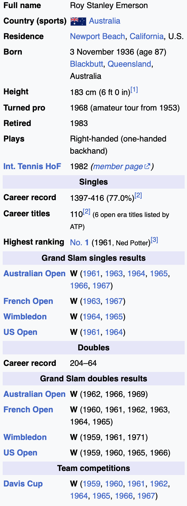

Q1: When was the most recent time that Roy Emerson won the Australian Open ?
A1: 1969
Q2: How long did Roy Emerson play in the amateur league before going professional ?
A2: 15 years
Q3: How old was Roy Emerson when he retired from playing professionally ?
A3: 47 years old
Q4: What year was Roy Emerson inducted into the International Tennis Hall of Fame ?
A4: 1982
Q5: Which Grand Slam tournament did Emerson win the 2nd time he won the Davis Cup team competition?
A5: French Open